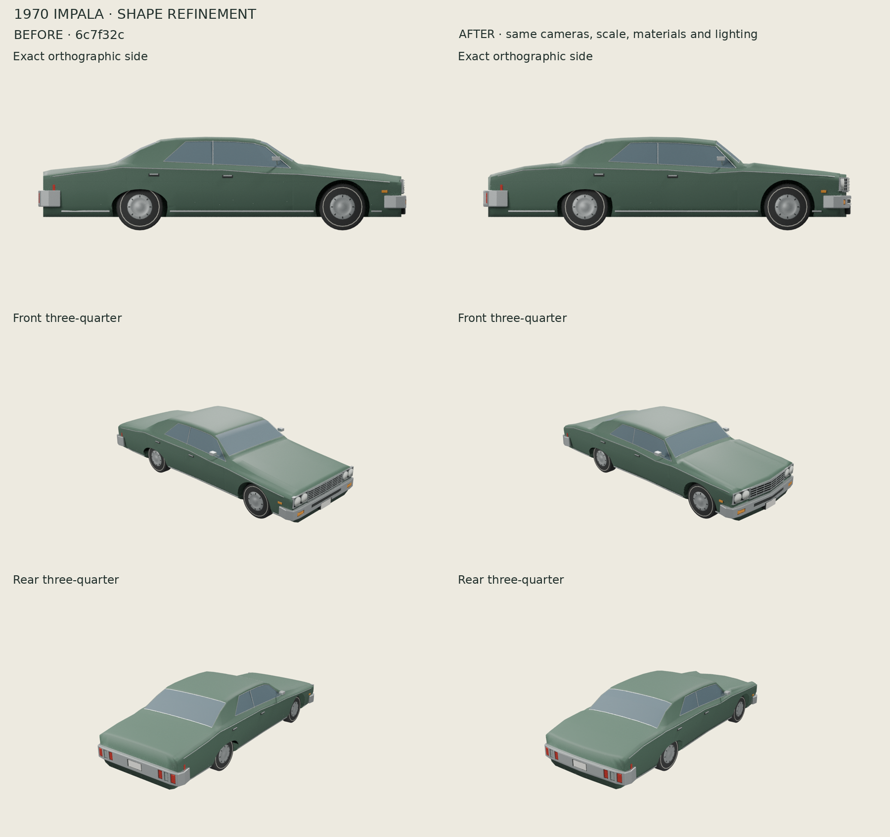
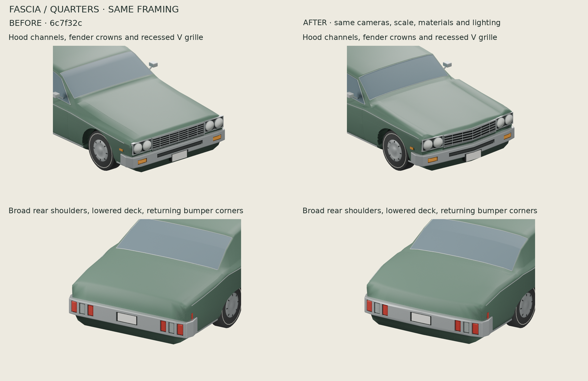
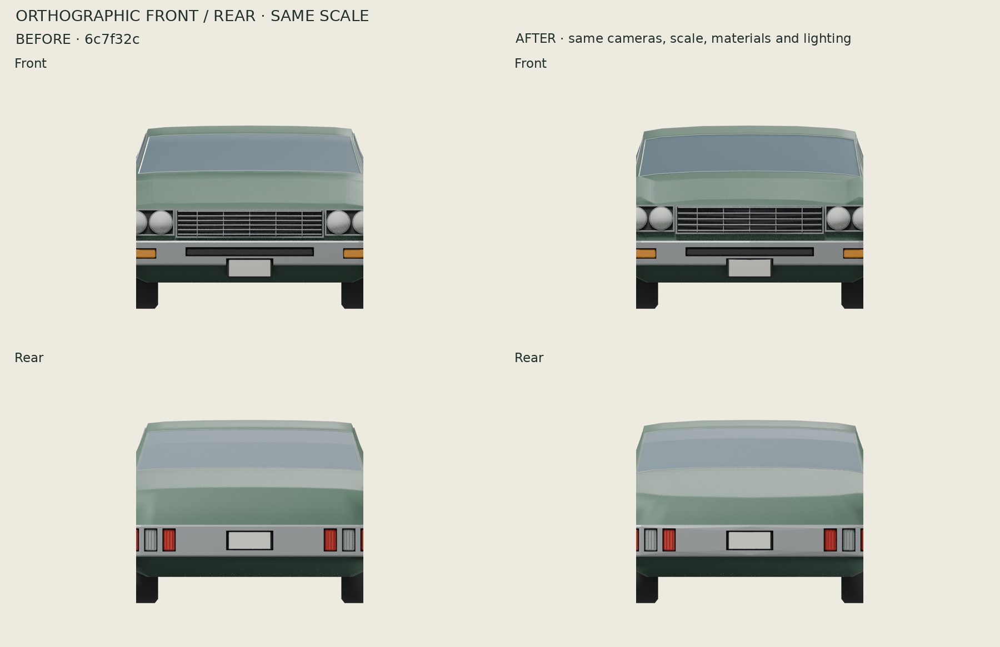
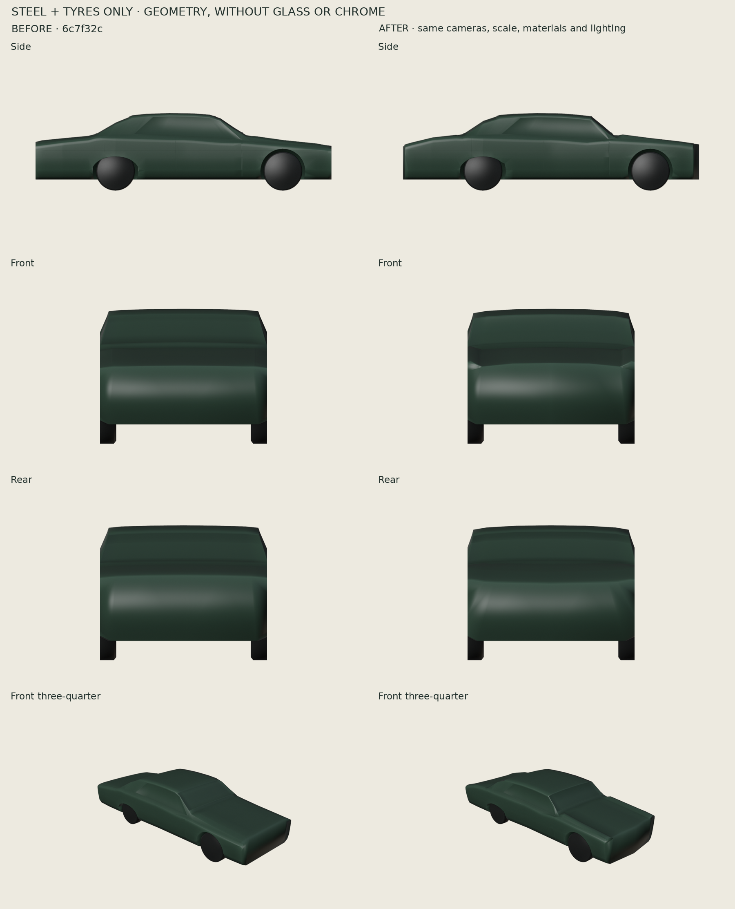
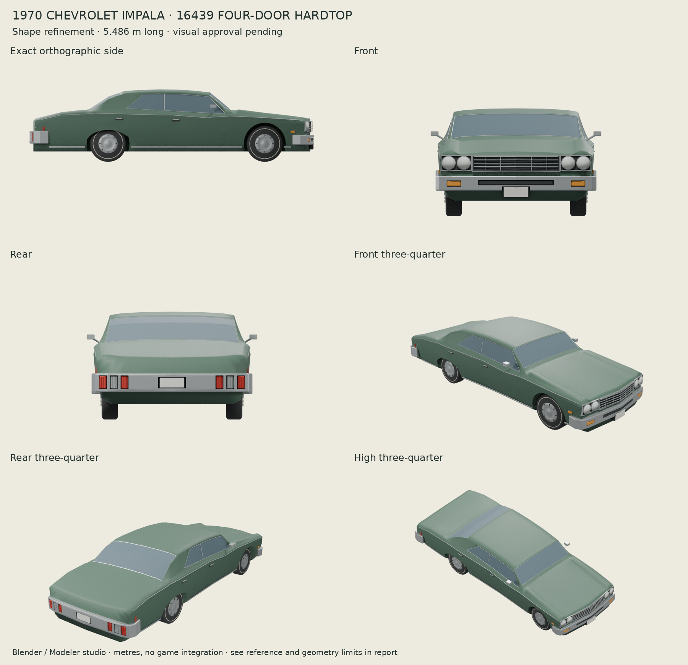
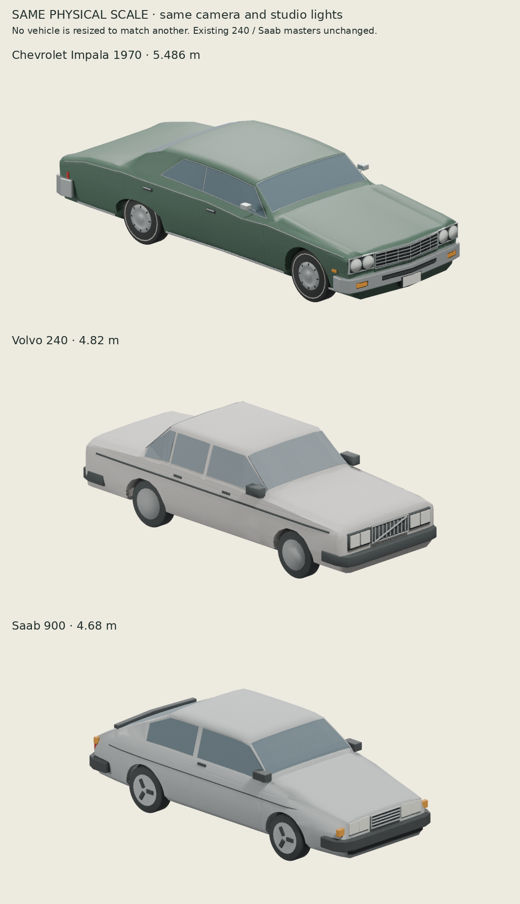

VRIGSTAD JOYRIDE · VEHICLE EXPERIMENT
1970 Chevrolet Impala
Shape refinement
The existing four-door hardtop, refined from finished master 6c7f32c. Compare the actual steel, front relief, side sculpture and rear shoulders. Both columns use identical cameras, scale, lighting and material values.
Before / after
Left: previous finished model. Right: this refinement. Tap an image to inspect the full PNG on iPad.

Steeper windshield, sculpted waist, shaped nose and lower deck between broad quarters.

Hood channels and fender crowns are steel geometry. Grille and bumper follow the V front.

Exact orthographic front and rear.
Underlying geometry

Glass and chrome hidden in both versions. The body is one closed connected mesh.
Final model

Physical scale

Existing Volvo and Saab masters unchanged; same camera and studio.
Verified results and limits
19,856 triangles · 27 mesh primitives · 12 materials · no textures. Length 5.4864 m, wheelbase 3.0226 m. Source body is closed, connected, consistently wound and nondegenerate. Glass/body and tyre/body checks pass, as do the strict GLB validator, Blender reimport, actual Three r128 loading, wheel/body pose, isolated paint and independent regeneration checks.
All wheel geometry and origins, node names and material values match the prior master. Main, game code, physics and existing cars are unchanged. Machine-readable results · Before/after measurements.
Real headless Blender renders were visually inspected. Reference curvature is estimated from correct-variant manufacturer imagery and photographs; no complete reliable orthographic hardtop source was obtained. No whole-car IoU, exact photographic contour accuracy, exhaustive fixture collision proof, physical iPad GPU/FPS test or in-game approval is claimed. Sources and exclusions.
Experiment branch: experiment/impala-1970-shape. Human visual approval pending. This static page is ready for hosting; it does not imply a newly published live site.